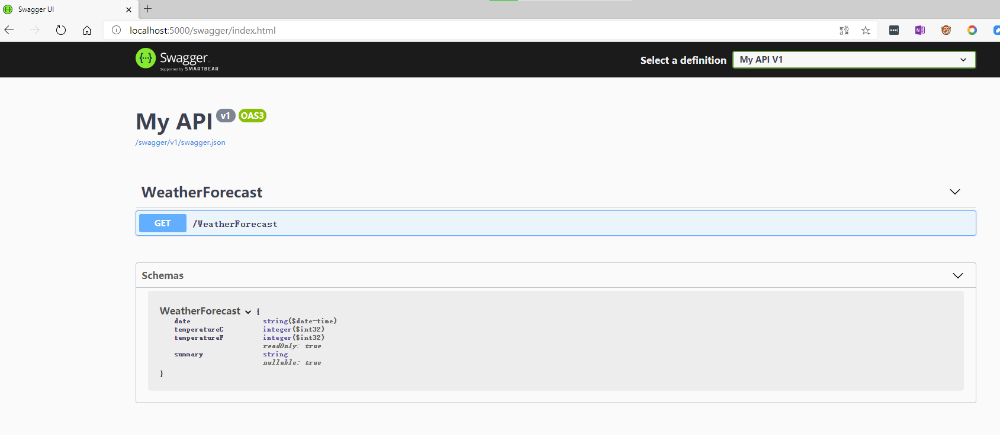
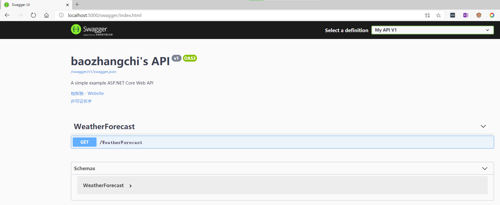
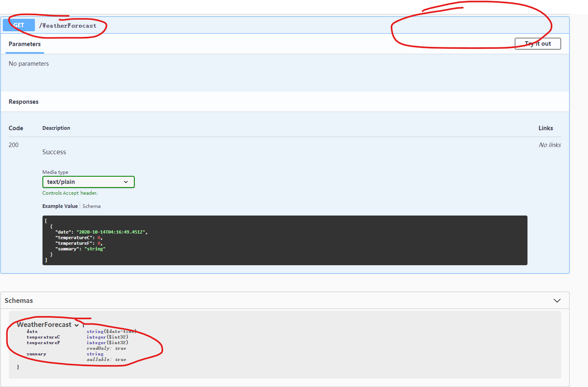
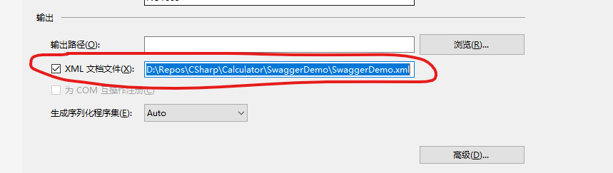
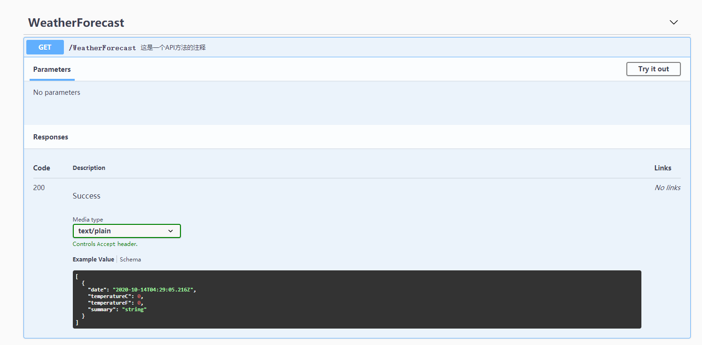
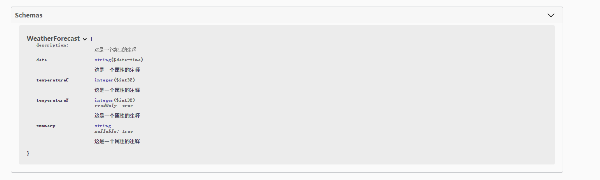
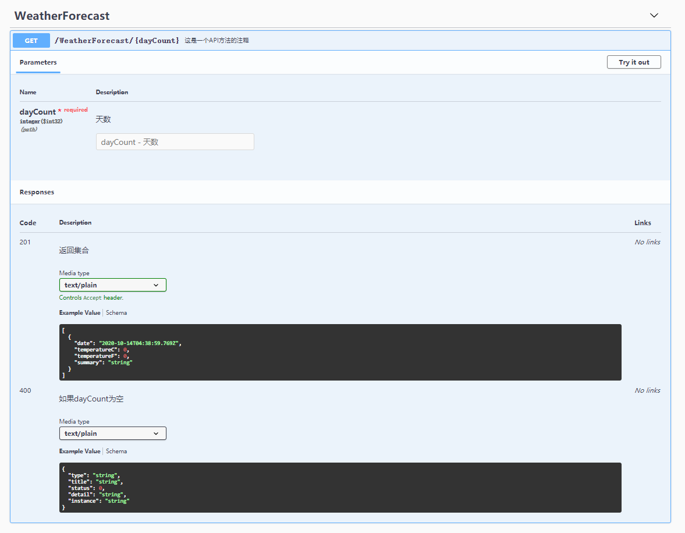
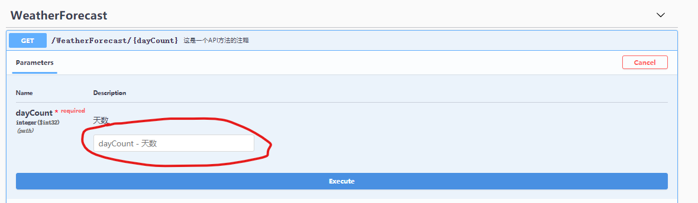
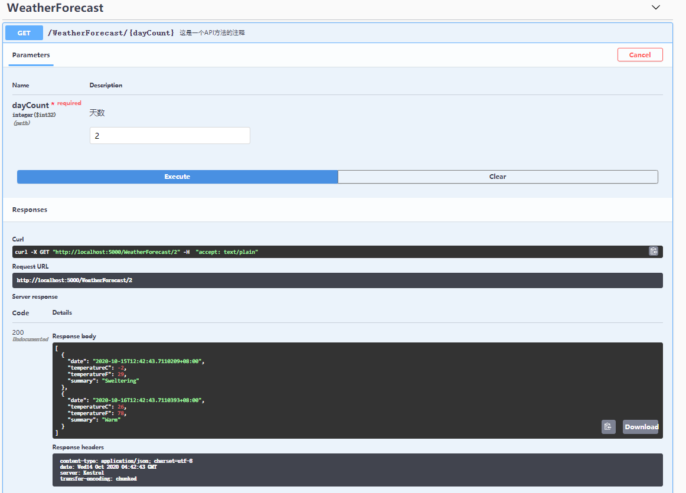
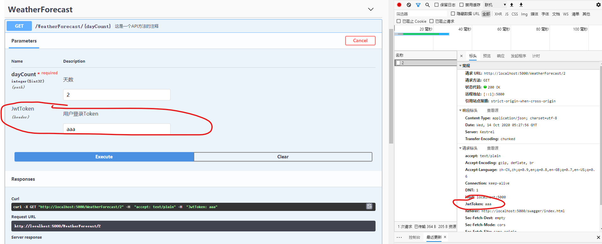

swagger是什么？
是一款让你更好的书写API文档的规范且完整框架。
提供描述、生产、消费和可视化RESTful Web Service。
是由庞大工具集合支撑的形式化规范。这个集合涵盖了从终端用户接口、底层代码库到商业API管理的方方面面。
swagger的使用
添加
nuget包引用：Swashbuckle.AspNetCore在
ConfigureServices中注册Swagger服务//注册Swagger生成器，定义一个和多个Swagger 文档
services.AddSwaggerGen(options =>
{
options.SwaggerDoc("v1", new Microsoft.OpenApi.Models.OpenApiInfo { Title = "baozhangchi's API", Version = "v1" });
});在
Configure中启用Swagger中间件app.UseSwagger();
app.UseSwaggerUI(options =>
{
options.SwaggerEndpoint("/swagger/v1/swagger.json", "My API V1");
});启动应用并导航到
http://localhost:<port>/swagger找到 Swagger UI。 通过 Swagger UI 浏览 API文档，如下所示。
要在应用的根 (
http://localhost:<port>/) 处提供 Swagger UI，请将RoutePrefix属性设置为空字符串：app.UseSwaggerUI(options =>
{
c.SwaggerEndpoint("/swagger/v1/swagger.json", "My API V1");
c.RoutePrefix = string.Empty;
});
Swagger的高级用法（自定义以及扩展）
使用Swagger为API文档增加说明信息
在
AddSwaggerGen方法的进行如下的配置操作会添加诸如作者、许可证和说明信息等：services.AddSwaggerGen(options =>
{
options.SwaggerDoc("v1", new Microsoft.OpenApi.Models.OpenApiInfo
{
Version = "v1",
Title = "baozhangchi's API",
Description = "A simple example ASP.NET Core Web API",
TermsOfService = null,
Contact = new Microsoft.OpenApi.Models.OpenApiContact
{
Name = "包张驰",
Email = string.Empty,
Url = new Uri("https://blog.bugmaker.xyz")
},
License = new Microsoft.OpenApi.Models.OpenApiLicense
{
Name = "许可证名字",
Url = new Uri("https://blog.bugmaker.xyz")
}
});
});wagger UI 显示版本的信息如下图所示：

为接口方法添加注释
大家先点击下api，展开如下图所示，可以没有注释啊，怎么来添加注释呢？

按照如下所示用三个
/添加文档注释，如下所示/// <summary>
/// 这是一个API方法的注释
/// </summary>
/// <returns></returns>
[]
public IEnumerable<WeatherForecast> Get()
{
var rng = new Random();
return Enumerable.Range(1, 5).Select(index => new WeatherForecast
{
Date = DateTime.Now.AddDays(index),
TemperatureC = rng.Next(-20, 55),
Summary = Summaries[rng.Next(Summaries.Length)]
})
.ToArray();
}/// <summary>
/// 这是一个类型的注释
/// </summary>
public class WeatherForecast
{
/// <summary>
/// 这是一个属性的注释
/// </summary>
public DateTime Date { get; set; }
/// <summary>
/// 这是一个属性的注释
/// </summary>
public int TemperatureC { get; set; }
/// <summary>
/// 这是一个属性的注释
/// </summary>
public int TemperatureF => 32 + (int)(TemperatureC / 0.5556);
/// <summary>
/// 这是一个属性的注释
/// </summary>
public string Summary { get; set; }
}然后在项目中启用
xml注释右键单击
解决方案管理器中的项目，选择属性查看
生成选项卡的输出部分下的XML文档文件框如图勾选

在
AddSwaggerGen中添加xml文件路径引用，建议采用Path.GetDirectoryName(typeof(Program).Assembly.Location)方式获取// 为 Swagger JSON and UI设置xml文档注释路径
var basePath = Path.GetDirectoryName(typeof(Program).Assembly.Location);//获取应用程序所在目录（绝对，不受工作目录影响，建议采用此方法获取路径）
var xmlPath = Path.Combine(basePath, "SwaggerDemo.xml");
options.IncludeXmlComments(xmlPath);重新生成并运行项目查看一下注释出现了没有


描述响应类型
接口使用者最关心的就是接口的返回内容和响应类型啦。下面展示一下201和400状态码的一个简单例子：
我们需要在我们的方法上添加：
[ProducesResponseType(201)]和[ProducesResponseType(400)]然后添加相应的状态说明：返回集合、如果dayCount为空
最终代码应该是这个样子：
/// <summary>
/// 这是一个API方法的注释
/// </summary>
/// <param name="dayCount">天数</param>
/// <returns>测试结果集</returns>
/// <response code="201">返回集合</response>
/// <response code="400">如果dayCount为空</response>
[]
[]
[]
public IEnumerable<WeatherForecast> Get(int dayCount)
{
var rng = new Random();
return Enumerable.Range(1, dayCount).Select(index => new WeatherForecast
{
Date = DateTime.Now.AddDays(index),
TemperatureC = rng.Next(-20, 55),
Summary = Summaries[rng.Next(Summaries.Length)]
})
.ToArray();
}效果如下

使用SwaggerUI测试api接口
下面我们通过一个小例子通过SwaggerUI调试下接口吧
点击一个需要测试的API接口，然后点击Parameters左右边的“Try it out ” 按钮
在出现的参数文本框中输入参数，如下图所示的，输入参数2

点击执行按钮，会出现下面所示的格式化后的Response，如下图所示

添加
Token先添加一个
GlobalHttpHeaderExtensionpublic class GlobalHttpHeaderExtension : IOperationFilter
{
public void Apply(OpenApiOperation operation, OperationFilterContext context)
{
if (operation.Parameters == null)
{
operation.Parameters = new List<OpenApiParameter>();
}
operation.Parameters.Add(new OpenApiParameter()
{
Name = "JwtToken",
In = ParameterLocation.Header,
//Type = "string",
Description = "用户登录Token",
Required = false
});
}
}然后在
AddSwaggerGen添加注册options.OperationFilter<GlobalHttpHeaderExtension>();
运行效果如下
